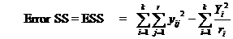

STAM101 :: Lecture 15 :: Completely randomized design – description – layout – analysis – advantages and disadvantages

Completely Randomized Design (CRD)
CRD is the basic single factor design. In this design the treatments are assigned completely at random so that each experimental unit has the same chance of receiving any one treatment. But CRD is appropriate only when the experimental material is homogeneous. As there is generally large variation among experimental plots due to many factors CRD is not preferred in field experiments.
In laboratory experiments and greenhouse studies it is easy to achieve homogeneity of experimental materials and therefore CRD is most useful in such experiments.
Layout of a CRD
Completely randomized Design is the one in which all the experimental units are taken in a single group which are homogeneous as far as possible.
The randomization procedure for allotting the treatments to various units will be as follows.
Step 1: Determine the total number of experimental units.
Step 2: Assign a plot number to each of the experimental units starting from left to right for all rows.
Step 3: Assign the treatments to the experimental units by using random numbers.
The statistical model for CRD with one observation per unit
Yij = m + ti + eij
m = overall mean effect
ti = true effect of the ith treatment
eij = error term of the jth unit receiving ith treatment
The arrangement of data in CRD is as follows:
|
Treatments |
|
|||
|
T1 |
T2 |
Ti |
TK |
|
|
y11 |
y21 |
yi1 |
YK1 |
|
|
y12 |
y22 |
yi2 |
YK2 |
|
|
y1r1 |
y2r2 |
yiri |
Yk rk |
|
Total |
Y1 |
Y2 |
Yi |
Tk |
GT |
(GT – Grand total)
The null hypothesis will be
Ho : m1 = m2=………….=mk or There is no significant difference between the treatments
And the alternative hypothesis is
H1: m1 ≠ m2≠ ………….≠ mk. There is significant difference between the treatments
The different steps in forming the analysis of variance table for a CRD are:
n= Total number of observations
4. 
= TSS – TrSS
5. Form the following ANOVA table and calculate F value.
Source of variation |
d.f. |
SS |
MS |
F |
Treatments
Error |
t-1
n-t |
TrSS
ESS |
TrMS= |
|
Total |
n-1 |
TSS |
|
|
6. Compare the calculated F with the critical value of F corresponding to treatment degrees of freedom and error degrees of freedom so that acceptance or rejection of the null hypothesis can be determined.
7. If null hypothesis is rejected that indicates there is significant differences between the different treatments.
8. Calculate C D value.
C.D. = SE(d). t
ri = number of replications for treatment i
rj = number of replications for treatment j and
t is the critical t value for error degrees of freedom at specified level of significance, either 5% or 1%.
Advantages of a CRD
- Its layout is very easy.
- There is complete flexibility in this design i.e. any number of treatments and replications for each treatment can be tried.
- Whole experimental material can be utilized in this design.
- This design yields maximum degrees of freedom for experimental error.
- The analysis of data is simplest as compared to any other design.
- Even if some values are missing the analysis can be done.
Disadvantages of a CRD
- It is difficult to find homogeneous experimental units in all respects and hence CRD is seldom suitable for field experiments as compared to other experimental designs.
- It is less accurate than other designs.
| Download this lecture as PDF here |